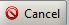

Welcome to Mambo’s documentation!¶
Contents:
{kind=link}
ICA Group
Mambo User Manual
| Diffusion date | Writer | Auditor | Approver | Approver’s stamp |
Modifications | Index |
|---|---|---|---|---|---|---|
| 2005/10/26 | L.Claisse | M.Ounsy | A.Buteau | A.B. | Creation | 1.0 |
| 2005/11/17 | L.Claisse | M.Ounsy | A.Buteau | A.B. | Added multi-AC/VC and file system | 1.1 |
| 2006/11/17 | R.Girardot | M.Ounsy | A.Buteau | A.B. | Screenshots updated | 1.2 |
| 2012/02/15 |
|
G.Abeillé | A.Buteau | A.B. | Added tdb long term | 2.1 |
| 2018/02/08 | M.Thiam | R.Girardot | A.Buteau | A.B. |
|
3.0 |
Diffusion: for information
Receivers: Any archiving User
Table of content:
2. Application’s context: Historic and Temporary archiving
3. Application’s description and goals
4.2 Deleting an existing Account
4.3 Launching application with an existing account
5.3 Starting/Stopping archiving
5.3.1 The Current Archiving Configuration detail panel
5.3.2 Starting/Stopping archiving on an AC
5.4.1 The Current Archiving Configuration
5.4.2 The Archiving assessment window
6.5 Using the Variations functionality
Introduction¶
This document is an end-user guide to using the Mambo application, and a brief developer-oriented presentation of the application’s architecture.
Application’s context: Historic and Temporary archiving¶
The goal is the automatic archiving of the values of a set of Tango Attributes, in a given time range.
In this time range, the value of an attribute is archived:
Every [given time interval]
AND
When the attribute’s value meets [given condition on attribute’s value],
where [given time interval] and [given condition on attribute’s value] are user-defined for each attribute (individually or for a group of attributes).
Each attribute value is associated with a time stamp, representing the time when the attribute value was read. This time stamp is archived as well.
Attributes can be archived in two distinct databases:
- The Historical Data Base (HDB henceforth): attributes values
are stored forever.
- The Temporary Data Base (TDB henceforth): every [given deletion time], the oldest attributes values records are
deleted. The TDB is regularly purged. The Interval of this purge is defined by the data base administrator and the system administrator.
When an attribute is “being archived”, it means that every [base time unit], the archiving device tests whether the current value of the attribute has to be stored in HDB (resp. TDB).
If the test is positive, a record is added in the table for this attribute.
Later, those values can be exploited. It can be selected from HDB/TDB to be displayed and saved in a file
Application’s description and goals¶
Application’s goals¶
Mambo allows the user to define configurations that describe the archiving and exploitation for a group of attributes. Those configurations can be saved as files and modified.
Mambo is thus naturally divided (both in functionalities and display) in two parts:
- The archiving control part.
- The archived data exploitation part.
A first look at Mambo¶
Figure 1: General view of Mambo
{kind=link}
- The Archiving Control panel is where the user controls the archiving
of Tango attributes in HDB/TDB.
To do so, the user can create/modify archiving configurations, and Start/Stop those configurations.
An Archiving Configuration is a list of attributes to be archived, with a list of archiving parameters for each attribute.
Users can also start/stop the archiving of some attributes in the configuration, (see 5.3.2 Starting/Stopping archiving on an AC).
- The Data Exploitation panel is where the user exploits the previously
stored data, mainly displaying curves and extracting raw data from HDB/TDB.
He does so by creating/modifying View Configurations, and calling View Stop on those configurations.
A View Configuration is a list of attributes to be displayed, with a list of displaying parameters for each attribute.
- The Menu and the Tool bar are for actions shortcuts and application’s
options.
Each panel will be detailed in its own subsection.
Account manager¶
The Mambo Account Manager is here to manage accounts, which means:
- Creating a new account.
- Deleting an existing account.
- Launching application with an account chosen in a list.
An account is associated with a directory, in which are stored application setup and history. Having various accounts allows different users to have their own application configuration and history.
Figure 2: Mambo Account Manager
The above figure presents the account Manager Interface, at application start. With this manager, user can create a new account, or delete or use an existing one.
To quit the application, simply click on or button.
Existing accounts are listed in the account Selection Combo Box, which you can be reloaded by clicking on button (if you think that someone could have modified it by creating a new account or deleting an existing one, for example).
{kind=link}
{kind=link}
{kind=link}
Creating a new account¶
To create a new account, click on the button (at the bottom left of the panel). A new dialog will appear, as following.
Figure 3: Creating a new account
In this new dialog, you will have to enter the name of your new account and the path of the application working directory for this account. If you prefer, you can browse for the path by clicking on the button. Then, a classic browsing dialog will be displayed, in which you can choose the directory. When both fields (“Name” and “Path”) are fulfilled, click on button to validate your new account, which will be automatically added in the list of existing accounts. If you click on or button, you go back to the first dialog, as presented in, and nothing is done.
{kind=link}
{kind=link}
Deleting an existing Account¶
To delete an existing account, first select the account in the account Selection Combo Box, as following:
Figure 4: Account selection
When the account is selected, click on button to delete it. If you do it, you won’t be able to use this account any more (and no other user either), because the account is definitely removed from list. The account deletion doesn’t involve the corresponding directory (neither its content) deletion.
If you want to see your account path, you can check “Show account path”.
Figure :Show account path
{kind=link}
{kind=link}
{kind=link}
Launching application with an existing account¶
Control archiving¶
This section deals with controlling archiving of Tango attributes through Archiving Configurations (henceforth AC).
An AC describes which attributes to archive and how, and consists of:
General information (when the AC was created …).
A list of attributes to archive.
For each attribute, a set of HDB/TDB archiving modes.
{kind=link}
Creating/modifying an AC¶
The creation or modification of an AC is done the same way, using the New/Modify button respectively. We will see how to load an AC later.
Step 1: AC general properties
Click the New/Modify button in the AC actions panel
The following dialog appears
Figure : Step1, general properties
- You can choose a name for the AC. This field isn’t mandatory but it
is recommended to fill it, to better identify your different ACs later.
- The creation and update dates are filled or modified automatically
upon saving an AC. Click next
Step 2: Select the AC attributes
There are 2 ways to select the AC attributes. The user can choose a selection method in the Options.
Step 2, method 1:

Figure 8: Step 2, select AC attributes (standard method)
- The left tree lists the Tango attributes. The right tree represents
the current attributes of the edited AC. Both trees have the same structure of TANGO_HOST/Domains/Families/Members/Attributes.
WARNING The left tree listing the Tango attributes is initially only loaded up to Members level to avoid overloading. The attributes are loaded upon user selection of a Member (device) node.
Adding attributes to the current AC:
Select a tree node to expand it.
- Select attributes in the left tree then press the right arrow to
add them to the current AC.
- Select a node in the left tree then press the right arrow to add
all attributes under this node to the current AC (only works if those attributes were loaded).
Removing attributes from the current AC:
- Select attributes in the right tree then press the red X to remove
them from the current AC.
- Select a node in the right tree then press the red X to remove all
attributes under this node from the current AC.
Using “Match” to filter attributes:
The user can enter an expression of the form D/F/M and click match to filter attributes in the left and right trees.
D represents the Domains; F represents the Families, and M the Members. All trees can contain the joker character ‘*’.
Since the tree loading is initially only up to Member level, it’s not possible to filter up to Attributes level.
Step 2, method 2:
Figure 9: Step 2, select AC attributes (alternate method)
Attribute selection and automatic attributes adding:
- Choose a Domain. This refreshes the list of possible Device
classes for this Domain.
- Choose a Device class. This refreshes the list of possible
Attributes for this Domain and Device class.
Choose an Attribute and press Add attribute:
All Attributes
- with the selected name
AND
- belonging to any Device of the selected Class and Domain are added to
the current AC’s list of attributes.
All new attributes are red until the AC is saved.
Line level sub-selection of loaded attributes:
Each attribute is initially checked, but this check can be removed by the user. When the user clicks on next, all unchecked attributes will be removed from the current AC.
Click “Select All” to select all lines.
Click “Select None” to select no line.
- Select lines in the list (CTRL and SHIFT are usable), then click
“Reverse for selected lines” to reverse the checked/unchecked status of all selected lines.
Step 3: Set the AC attributes properties
Figure 10: Step 3, selecting archiving modes
A general description of the properties setting process:
The way you set up archiving modes for each attribute is as follows:
Select a group of attributes.
Edit HDB/TDB modes.
- Call “Set” for the current group of attributes: the currently
displayed modes are applied to all attributes of the selection.
Repeat with next group of attributes.
End edition by clicking “Finish”.
Attributes selection
The setting up of archiving modes can be “factorized” for a selection of attributes. All attributes of the selection will be set up with the currently displayed properties when the user presses “Set”.
The multiple selections can consist of:
A manual select at Attributes level (CTRL and SHIFT are usable).
- Selection of an upper node level: all Attributes nodes under this
node will be set up.
A combination of the two.
Unset attributes and default values
Attributes which haven’t received any Mode yet (unset) are displayed in Italic. Attributes which have (set) are displayed in Bold.
Clicking on a set attribute displays its archiving modes.
Clicking on an unset attribute displays default archiving modes.
Controls upon AC validation.
The user can not choose any and all combination of modes, nor any and all numeric values for each mode. Thus, controls are performed upon call to “Finish”:
- If any HDB (resp. TDB) mode is chosen for a given attribute, it must
also have the basic HDB (resp. TDB) Periodic mode.
- Any unset attribute will be removed from the AC; the user is prompted
to continue editing the AC, or ignore them.
Numeric values are controlled for each mode.
When the validation is over, the AC is displayed in the application’s AC panel.
{kind=link}
{kind=link}
{kind=link}
{kind=link}
Starting/Stopping archiving¶
The Current Archiving Configuration detail panel¶
Attributes are displayed differently in selection trees, with respect to their current archiving status. The display shows their current status in DB, not their archiving modes in the current AC.
{kind=link}
{kind=link}
{kind=link}
{kind=link}
Starting/Stopping archiving on an AC¶
Starting archiving:
- Create/Load an AC or just use the current AC. The AC that will be
used is the one displayed in the application’s AC panel.
Call Start to start archiving each attribute by all its modes.
Stopping archiving:
- Create/Load an AC or just use the current AC. The AC that will be
used is the one displayed in the application’s AC panel.
- Call Stop to stop archiving of each attribute. All archiving modes
will be stopped.
In both cases, a success/failure message confirms the action.
Displaying an AC¶
The Current Archiving Configuration¶
{kind=link}
Figure 12: Detail of the current AC
This panel represents the current Archiving Configuration.
On the left, a tree lists all of the AC’s attributes.
When the user selects a given attribute on this tree, its HDB and TDB modes are displayed on the right sub-panel.
This displays the attributes modes individually. To get a global view of the AC’s Archiving Modes, use the “Archiving assessment” command.
The Archiving assessment window¶
{kind=link}
Figure 13: Global view of all the modes of an AC
This window sums up the current Archiving Configuration in two tabs (one for HDB, one for TDB).
For each attribute contained in the current AC, its archiving modes are detailed, and if the attribute is being archived, can be compared to the modes values found in HDB (resp. TDB).
Saving/Loading an AC¶
Saving an individual AC¶
Archiving Configurations are saved /loaded as XML files, with the .ac file extension.
In the menu, select “ACs/Save” or “File/Save/Archiving configuration”:
Saved operations work like they do with Word (for example):
- The first time a file is saved, the user is prompted to choose a path
and file name. Initially the file chooser dialog is in the “ac” subdirectory of the Mambo working directory. The “.ac” file extension is automatically added if the user doesn’t.
- If a file was already saved, it will automatically be saved in the
same file the next time the “Save” menu is selected.
- The user can still specify a different file, by using the “ACs /Save
as” menu (or “File/Save As/Archiving configuration”).
When an AC is loaded, it becomes the current Archiving Configuration and it is added to the list of opened ACs.
In both cases, a success/failure message confirms the action in the log panel.
Saving all opened ACs¶
It is possible to save all opened ACs. Only modified ACs will be saved (i.e. the ACs that has a “red star”).
In the menu, select “ACs/Save All”:
For each modified AC, the save operation will follow the same rules as an individual save:
If the file has already been saved before, it will be saved silently.
Otherwise, the user will be prompted to choose a directory and file.
In this case, the ACs that are being saved are successively selected before each file chooser prompt (so that the user knows which AC he’s choosing a path for).
The generic “Save All” menu item in “File/ Save All” does this and the same thing for opened VCs.
Transfer to VC¶
This functionality is used to quickly create a VC on the same attributes as a given AC (for example, when the user wants to monitor the values of attributes after starting archiving on an AC).
It will create a VC automatically, with the following properties:
- Its attributes list is the same as the AC the “Transfer to VC”
functionality is used on
- The attributes values are all extracted from HDB, even if some of the
AC’s attributes were only archived in TDB (obviously, the display for such an attribute will be empty).
The date range of a one-hour range ends when the VC is created
- Every Attribute has an automatically determined color (if there are
more attributes than colors to choose from, different attributes will have the same color).
Exploit archived data¶
This section deals with controlling exploitation of archived attributes (HDB/TDB) through View Configurations (henceforth VC).
A VC describes which attributes to display and how, and consists of:
- General information (when the VC was created, the date range to
extract …).
A list of attributes to display.
For each attribute, a set of display properties.
The archived attributes of a VC either all come from HDB or all come from TDB, since it wouldn’t make sense to display HDB and TDB attributes in a common plot,
VCs are accessed and used in the VC panel:
{kind=link}
Figure 14: The VC panel
Creating/modifying a VC¶
Creation or modification of a VC is done the same way, using the New/Modify button respectively. We will see how to load a VC later.
Step 1: VC general properties
Those properties don’t depend on a specific attribute. They are common to all VC attributes or describe the VC.
Click the New/Modify button in the VC actions panel, the following dialog appears:
{kind=link}
Figure 15: Step 1, general properties
Step 1.1: VC properties
You can choose a name for the VC. This field isn’t mandatory but it is recommended to fill it.
The creation and update dates are filled automatically upon saving the VC.
The user must define a date range (Start/End dates) to extract data from. This can be done either manually, or by selecting a “Since xxx” item in the “Date range” drop-down menu.
In the latter case, the user can check the “Dynamic date range”. What this option does is recalculate the Start/End dates at each edition or refreshing the VC (see 6.3 Displaying a VC).
Example: At 09:00 the user chose “Last 1 hour” as the “since option”.
The date range will be [08:00-09:00].
If the VC is then edited at 11:00, and “Dynamic date range” was checked, the date range will be [10:00-11:00]; otherwise it will still be [08:00-09:00].
If the “Historic” checkbox is checked, VC attributes will be chosen among HDB attributes (otherwise, TDB).
If the “History” checkbox is not checked, you are in TDB mode so you can import long term snapshot. In this case you can’t modify start and end date because the snapshot configures it himself.
Step 1.2: General chart properties
The user can define global chart properties (title, background …).
{kind=link}
Figure 16: Step 1, general chart properties
Step 1.3: Y1 axis properties
{kind=link}
Figure 17: Step 1, Y1 axis properties
- The user can define the left vertical axis properties (title, scale, …).
Step 1.4: Y2 axis properties
{kind=link}
Figure : Step 1, Y2 axis properties
The user can define the right vertical axis properties (title, scale, …).
Step 2: Select the VC attributes
The attributes selection works the same way as an AC attributes selection, except for two differences:
The only available selection mechanism is the tree selection
The trees are initially loaded to the attributes level.
{kind=link}
Figure : Step 2, selecting attributes
The left tree lists the HDB (resp. TDB) attributes. The right tree represents the current attributes of the edited VC. Both trees have the same structure of HDB (resp. TDB)/Domains/Families/Members/Attributes.
WARNING Unlike AC trees, VC trees are initially loaded to the Attributes level since archived attributes are a small subset of all Tango attributes.
Consequently, the match functionality works up to attributes names: one can use a D/F/M/A criterion.
Step 3: Set the VC attributes properties
General flow
To set the VC attributes, user can refer to the ACs, it’s the same process.
{kind=link}
Figure 20: Set the vc attributes
Step 4: Controls upon VC validation
- Any unset attribute will be removed from the VC; the user is prompted to continue editing the VC, or ignore them.
- The VC’s date range is controlled
When the validation is over, the VC is displayed in the application’s VC panel.
Displaying a VC¶
{kind=link}
Figure 21: The current VC panel
This panel represents the current View Configuration; a tree lists all the VC’s attributes.
To view specific parameters, the user must use the “Modify” button.
Thanks to the docking, users can see two generals information.
{kind=link}
Figure 22: Extraction of Number and Boolean Scalars
This panel shows the attribute’s extractions.
If the user wants to extract attributes, he must select his time range then press to the button refresh.
If he wants to stop the refreshing he will press to the button cancel.
{kind=link}
{kind=link}
{kind=link}
Figure 23: Extraction of String and State Scalars
This panel gives Extraction of the string and state scalars.
{kind=link}
Figure 24: Extraction of Boolean Spectra
This panel shows the results of the Extraction of Boolean spectra.
Saving/Loading a VC¶
The user does the same thing as in ACs to save or load VC.
See 5.5 Saving/Loading an AC.
Using the Variations functionality¶
The Variations functionality is a filter which comes between a VC and the final plot display.
{kind=link}
Figure 25: The “variations” attributes selection window
The Variations window lists the VC attributes and their “variation”, which is defined as the difference between the min and max values in the VC’s date range.
The user can then select attributes which variations that seem abnormal or interesting, and only plot those attributes.
The Variations window is made of two different tables:
- The first one shows for every attribute its minimum and maximum
values, and its variation.
The second one gives every attribute and its balanced variation.
Select lines in the left table, and press “View Selected Attributes” to display the filtered plot.
{kind=link}
Figure 26: The View selected attributes
Options¶
Mambo manages global options. Those options are saved on application shutdown, and loaded on startup.
The Options menu is located in the Menu bar: ToolsOptions.
Application’s history save/load options¶
These options define whether Mambo has a history, i.e. a persistent state when closed/reopened.
If “Yes” is checked, a XML History file will be saved in Mambo’s workspace, and on next start up the current AC and VC will be loaded.
{kind=link}
Figure : The history options
AC options¶
Options for all Archiving Configurations, the user can define:
An attribute selection mechanism for AC edition (see 5 Control archiving).
- Default modes selection and values for HDB and TDB archiving (see 5.1
Creating/modifying an AC).
- The selected modes and values will be preset for all unset
attributes.
- The default values can be saved to /loaded from an Archiving
Configurations Defaults file (.acd extension).
- The “Restore defaults” button reloads the defaults with non
user-modifiable predefined values.
The size of the “AC stack”, that is the maximum number of opened ACs.
{kind=link}
Figure : The AC options
VC options¶
These are the options for all View Configurations. The user can define:
- Whether he wants to display the Read value of attributes only, the
Write value only, or both.
The size of the “VC stack”, that is the maximum number of opened VCs.
The chart properties.
The spectrum view (spectrum view type).
{kind=link}
Figure : The VC options
{kind=link}
The Mambo toolbar¶
Figure 31: The Mambo toolbar
- is a shortcut to create a new Archiving configuration or a new View configuration.
- is a shortcut to load an Archiving configuration or a View configuration.
- is a shortcut to save an Archiving configuration or a View configuration.
- is a shortcut to save quickly all Archiving configurations or View configurations.
- is a shortcut to print Archiving configuration or View configuration.
- is a shortcut to reset Archiving configuration or View configuration.
{kind=link}
{kind=link}
{kind=link}
Appendices¶
Lexicon¶
Archiving¶
The action of storing in database the values of Tango attributes in a time range, each value being associated with a time stamp.
Archiving mode¶
An archiving mode is a rule defining when an attribute has to be archived.
The most basic archiving mode is the Periodic archiving mode, where an attribute is archived every N milliseconds.
More elaborate archiving modes like the Threshold archiving mode ask for archiving when the attribute’s value meets certain conditions, but they can only be used in association with the Periodic archiving mode.
AC¶
Short for an Archiving Configuration
Describes archiving for a set of attributes, by associating a set of archiving modes to each of its attributes.
VC¶
Short for a View Configuration.
Describes plot properties for a set of attributes, by associating a set of plot properties to each of its attributes.
TDB¶
Short for the Temporary Database.
Attributes values archived in TDB are deleted every [given deletion time].
The TDB is regularly purged and the Interval of the purge is defined by the data base administrator and the system administrator.
Quick Save/Quick load¶
The action of saving (resp. loading) to a default file is Called “quick” because no user interaction to choose a directory/file name is required.